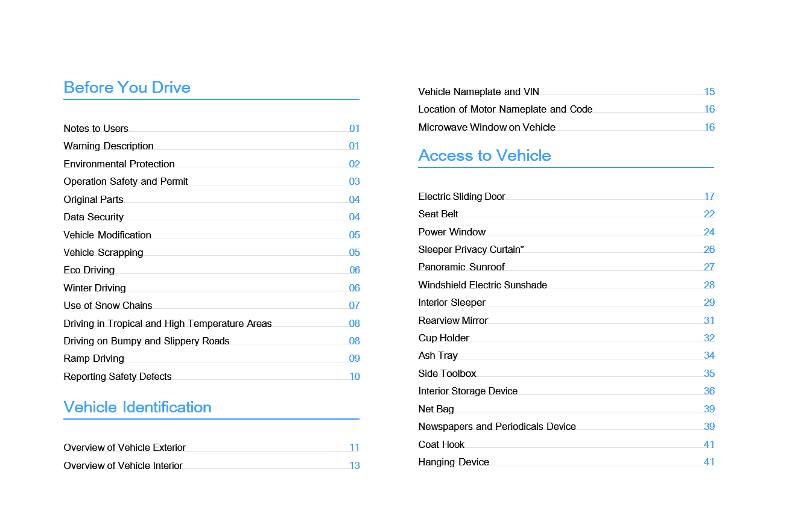

お客様へ
このたびはWindrose車両をお選びいただき、誠にありがとうございます。
はじめて車両を運転される前に、このオーナーズマニュアルをよくお読みください。本書には、車両の機能、安全な操作方法、整備要件、および技術的な仕様に関する重要な情報が記載されています。これらの情報をご理解いただくことで、安全で最適な運転パフォーマンスを実現するお役に立てます。
車両の仕様やオプション装備の違いにより、お届けした車両が本マニュアルの説明や図と一部異なる場合があります。Windroseは、継続的な製品改良の一環として、予告なく車両のデザイン、仕様、および装備を変更する権利を留保します。
本マニュアルに記載されている情報、図、および技術データは、発行時点において正確なものです。これらは参考情報として提供されており、契約上の約束を構成するものではありません。
本オーナーズマニュアルのいかなる部分も、Windroseの事前の書面による許可なしに、いかなる形式でも複製または転載することはできません。
注：本マニュアルに掲載されている表紙画像および図は参考用のものです。実際の車両の外観および仕様は異なる場合があります。
目次



ご使用の方へ
↑ トップ運転前に
本車両はバッテリー電気式トラクターユニットです。
日常の運転および整備においては、本オーナーズマニュアル（以下「本書」）に記載されているすべての警告および指示を遵守し、車両の損傷および人身傷害を回避してください。
はじめて車両を運転する前に、本書をよくお読みになり、車両の機能および操作上の要件を把握してください。使用中に問題が発生した場合は、Windroseサービスホットラインにご連絡ください。
本書の著作権はWindroseが保有しています。Windroseの事前の書面による許可なしに、本書のいかなる部分も複製・転載・配布することはできません。
Windroseは、継続的な製品改良の一環として、予告なく本書の内容を更新する権利を留保します。最新の車両情報については、センターディスプレイまたはWindroseモバイルアプリで提供される電子版オーナーズマニュアルをご参照ください。
Windroseウェブサイト：
Windroseサービスホットライン：公式のモバイルアプリストアで「Windrose」を検索してアプリをダウンロードできます。
補足略語は、初出時に「正式名称（略語）」の形式で記載されます。以降は略語を使用します。
警告の説明
↑ トップ運転前に
本書では、以下のシグナルワードおよびシンボルを使用しています。
警告回避しなかった場合に重傷または死亡につながるおそれのある危険な状況を示します。
注意
↑ トップ注意車両またはその部品に損傷を与える可能性がある状況を示します。
補足
↑ トップ補足追加の有益な情報または操作上のガイダンスを提供します。
環境保護
↑ トップ環境保護環境保護またはエネルギー効率に関する情報を示します。
アスタリスク
↑ トップ機能名の後にアスタリスク（*）が付いている場合、その機能は特定の車両モデルまたはオプション設定にのみ適用されることを示します。
図の説明
↑ トップ
この矢印は、図に示された対象物の正確な位置を示します。
この矢印は、図に示された対象物の移動方向を示します。
この矢印は、図に示された対象物の回転方向を示します。
この矢印は、図に示された対象物の反転方向を示します。
環境保護
↑ トップ運転前に
Windroseは、持続可能な開発と環境保護に取り組んでいます。本車両は、エネルギー効率の向上と排出量の削減を目的として設計されています。責任ある運転とエネルギー効率の高い方法で車両を操作することで、環境保護に貢献していただけます。
安全運転
運転前に
常に最大許容総重量および軸荷重を遵守してください。過積載は、車両の損傷、制御不能、または人身傷害を招く可能性があります。
衝突による衝撃力を受けたシートベルトは、目に見える損傷がない場合でも交換してください。
警告交換が必要です。
警告
ニュートラルのまま下り坂を走行しないでください。これにより駆動モーターによる制動が失われ、車両の制御不能につながる可能性があります。
運転前にシートを正しい位置に調整してください。シートの位置が不適切な場合、疲労、予期しないシートの動き、または車両の制御不能を引き起こす可能性があります。シートベルトを適切に使用できるシートポジションを確保してください。
シートベルトは重要な安全装置です。車両の走行中は、すべての乗員がシートベルトを正しく着用しなければなりません。
運転中はシートバックを過度に倒さないでください。緊急ブレーキ時に、不適切な着座姿勢によりシートベルトの効果が
低下する可能性があります。
次のいずれかの状況では、速度を30 km/h以下に抑えてください。
自転車専用レーン、踏切、急カーブ、狭い道路、または橋への進入・退出時。
Uターン、右左折、または急勾配の下り坂走行時。
霧、雨、雪、砂埃、またはひょうにより視界が50 m未満の場合。
凍結路面、積雪路面、または泥道での走行時。
故障車両を牽引している場合。
↑ トップ
注意電波望遠鏡観測所の近くを走行する場合は、安全な距離を保ってください。レーダー搭載車両は観測機器に電磁干渉を引き起こす可能性があります。
純正部品
運転前に
Windroseは、以下の状況下では部品の保証を提供しません。
走行安全性に関連するシステム（高電圧システム、電気システム、ブレーキ、ステアリング、TBOXなど）への無許可の車両改造。
車両のOBDシステムの改ざん。
安全リスクまたは車両損傷を招く非承認部品または液体の使用。
保証期間中に承認済み液体の使用を確認する書類を提出できない場合。
整備要件に従ってWindrose正規サービスセンターで整備を受けていない場合。
データセキュリティ
↑ トップ運転前に
適用法令に従い、Windroseは位置情報、運転行動データ、音声・映像記録、および個人情報を含む車両データを収集・処理します。
Windroseは、適用される個人情報保護規制および業界標準に準拠して、当該データを保護するための適切な技術的および組織的措置を実施しています。
車両改造
運転前に
↑ トップ改造前に必要な書類
車両の改造はすべて、適用される技術的および法令上の要件に準拠する必要があります。改造前に、関連する技術書類をWindroseに提出しなければなりません。
提出書類には、少なくとも以下の項目を含める必要があります。
改造後の車両の使用目的および使用条件。
改造後の総重量および軸荷重。
改造後の車両の外形寸法（作業形態を含む）。
ボディフロアの地上高。
ボディの架装方法。
サブフレームの概略図。
車両廃棄
運転前に
↑ トップ道路走行の要件を満たさなくなった車両は、適用される環境規制に従って廃棄処理しなければなりません。
車両の廃棄処理および高電圧バッテリーのリサイクルは、Windroseまたは認定リサイクル業者が実施しなければなりません。
警告高電圧バッテリーの不適切な廃棄は、火災または環境汚染を引き起こす可能性があります。無許可で高電圧バッテリーを分解または廃棄しないでください。
高電圧バッテリーのリサイクル
Windroseは、高電圧バッテリーの容量および状態を検査し、その時点の適用法令および市場状況に従って高電圧バッテリーをリサイクルします。
高電圧バッテリーのリサイクル：リサイクルおよびその後の処理は、Windroseまたは Windroseが指定するサードパーティのリサイクル業者が行う必要があります。
高電圧バッテリーの輸送：高電圧バッテリーは専門の輸送機関が輸送します。処理のために専門のリサイクル業者に通知するには、Windrose正規サービスセンターにご連絡ください。
警告
偶発的な火災や深刻な環境汚染を防ぐため、使用済み高電圧バッテリーを廃棄または投棄しないでください。
廃棄された高電圧バッテリーを他の企業や個人に引き渡さないでください。無許可での高電圧バッテリーの分解によって生じた環境汚染や安全事故については、責任を負うことになります。
エコドライブ
運転前に
以下の実践により、走行距離とエネルギー効率を最大化できます。
一定速度を維持し、急加速または急ブレーキを避けてください。
定期的なメンテナンスにより車両を良好な状態に保ってください。
ニュートラルギアでの走行は避けてください。Eアクスルへの潤滑が不十分になり、部品の損傷を招きます。
冬季走行
↑ トップ運転前に
冬季走行の準備
最低気温に合わせた高品質の冷却液を使用し、冷却液の凝固点が当地の最低気温よりも低くなるようにしてください。
低温下でバッテリーが凍結しないよう、常にバッテリーを満充電の状態に保ってください。
冬季における冷却液の使用
↑ トップ寒冷期または車両を寒冷な場所に駐車する場合は、冷却液の不凍性能を確保してください。Windroseが推奨する冷却液をお使いください。
冬季走行上の注意事項
スノーチェーンまたはスタッドレスタイヤの使用を推奨します。
急加速、急ブレーキ、および高速でのシャープなターンを避けてください。
雪や氷で覆われた道路を走行する場合は、常用ブレーキの制動力を確保するために低速で走行してください。
車間距離を適切に確保してください（雨雪路や
スノーチェーンを装着した後、車両を発進させ、チェーンが緩んでいないか、またはタイヤが正しく装着されているかを確認してください。
↑ トップ警告スノーチェーン使用時は、事故を防ぐため最大有効走行速度を超えないようにしてください。
凍結路面では車間距離を広く取ってください（常用ブレーキの制動距離が延びます）。
タイヤチェーンの使用
運転前に
タイヤチェーンを使用する際は、以下の点に注意してください。
厚い雪や氷に覆われた道路を走行する場合は、タイヤチェーンの使用を推奨します。
タイヤチェーンは、車両に装着されているタイヤのサイズおよびタイプに適合したものを使用してください。
駆動軸の外側タイヤ（両側）にタイヤチェーンを装着してください。
タイヤチェーンの装着または取り外し時に、タイヤを傷つけないよう注意してください。
注意
 雪や氷のない長い道路を走行する場合は、タイヤチェーンを取り外してください。
雪や氷のない長い道路を走行する場合は、タイヤチェーンを取り外してください。走行中にタイヤチェーンが車両の部品に接触または干渉しないようにしてください。
タイヤチェーンの装着および取り外しは、車両が平坦な地面に駐車している場合にのみ行ってください。
高温・熱帯地域での走行
運転前に
走行前に車両の状態を確認してください。
冷却液の液面が正常範囲内にあることを確認し、漏れがないか点検してください。
ライター、スプレー缶、香水などの可燃物を、長時間にわたりインストルメントパネル上や直射日光が当たる場所に放置しないでください。高温により加圧容器が破裂し、火災の危険があります。
走行中は以下の点に注意してください。
警告灯が点灯した場合は、直ちに走行を停止し、
Windrose正規サービスセンターにご連絡ください。
タイヤ空気圧およびタイヤ温度に注意してください。タイヤ空気圧またはタイヤ温度が異常な場合は、直ちに走行を停止し、タイヤを自然に冷却させてください。水をかけたり空気を抜いたりしてタイヤを冷却しないでください。これによりタイヤの老化や摩耗が促進され、最悪の場合バーストを招く可能性があります。
走行中にタイヤがバーストした場合は、直ちにハザードランプスイッチを押し、ステアリングホイールを9時と3時の位置でしっかり握ったまま切らずに維持し、ブレーキペダルを断続的に踏んで車速を徐々に落とし、他の道路利用者に注意を促してください。
タイヤ空気圧およびタイヤ温度を監視してください。
どちらかが異常な場合は、安全な場所に停車し、タイヤを自然に冷却させてください。水をかけたり空気を抜いたりしてタイヤを冷却しないでください。これによりタイヤの老化が促進され、バーストのリスクが高まります。
メータークラスターのインジケーターおよび警告灯に注意を払い、車両関連の故障表示灯または警告
凸凹路・滑りやすい路面での走行
運転前に
凸凹路・滑りやすい路面を走行する際は、以下の点に注意してください。
凸凹道路では、快適性を向上させ、サスペンションおよびショックアブソーバー部品の摩耗を最小化するために減速してください。
滑りやすい路面では、牽引力の喪失および車両の横滑りを防ぐために速度を落とし、ブレーキをゆっくり踏んでください。
濡れた路面や滑りやすい路面で車両が横滑りし始めた場合は、常用ブレーキを使用して滑らかに速度を落とし、急なステアリング操作を避けてください。
坂道走行
↑ トップ運転前に
上り坂走行の注意事項
坂道発進時に車両が後退した場合は、直ちにブレーキペダルを踏み、電子式駐車ブレーキをかけてから発進操作をやり直してください。
上り坂では低速を維持し、一定のペースで走行してください。アクセルペダルは徐々に踏み込み、急加速や急ブレーキを避けてください。
下り坂走行の注意事項
下り坂に入る前に減速し、制御された速度で下り坂に進入してください。
ニュートラルのまま下り坂を走行しないでください。これにより駆動モーターによる制動が失われ、車両の制御不能につながる可能性があります。
下り坂走行前に、ブレーキシステムが正常に機能していることを確認してください。異常が疑われる場合は、走行を再開する前に問題を修正してください。
横転リスクを低減するために、下り坂では急なステアリング操作を避けてください。
長い下り坂では、継続的なブレーキ操作を避けてください。ブレーキの過熱によるブレーキフェードを防ぐため、適切な速度制御とブレーキ技術を活用してください。
安全上の不具合の報告
↑ トップ運転前に
車両に安全関連の不具合があると疑われる場合は、可能な限り速やかに安全な場所に停車し、直ちにWindrose カスタマーサポートまたはWindrose正規サービスステーションにご連絡ください。
Windroseは、適用法令により必要な場合、安全通知、サービスキャンペーン、またはリコールを発行することがあります。欧州連合においては、車両の安全リコールはEU市場監視・型式認定フレームワークのもとで処理され、関連する加盟国の型式認定・市場監視当局と連携して対応されます。Windroseが提供するすべての安全指示およびサービスキャンペーン要件に従ってください。
Windroseサービスホットライン： [EU連絡先詳細要確認]
Windroseサービスウェブサイト： [EUサービスウェブサイト要確認]
正規サービスネットワーク： [EUサービスネットワーク要確認]
車両外観の概要
車両識別

前方ウインカーランプ／昼間走行灯
駐車灯 3. パノラミックサンルーフ
4. サイドツールボックス 5. 充電ポート

|
|
|
|
|
|
|---|---|---|---|---|---|
|
|
|
|
|
|
|
|
|
|
|
|
車内の概要
車両識別

|
|
2. |
|
3. |
|
|---|